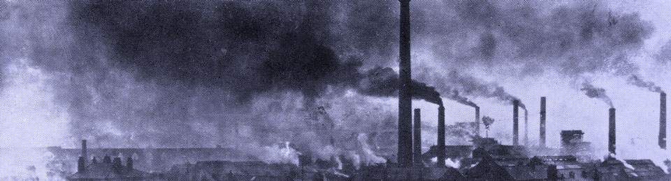
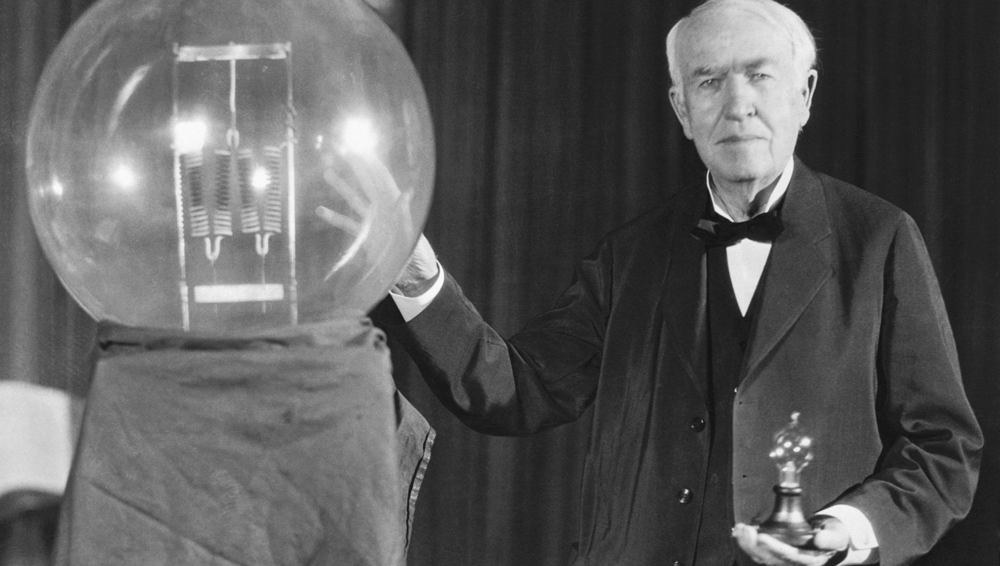
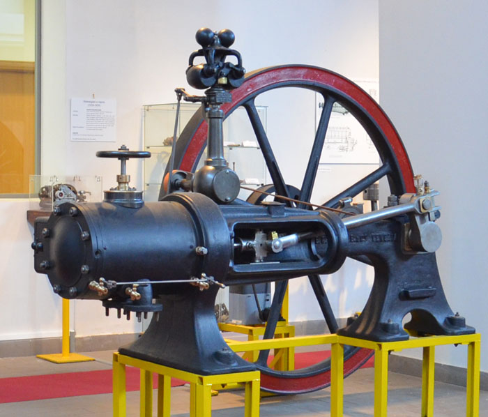

Durante la Rivoluzione Industriale, si verificarono notevoli cambiamenti sociali, economici e demografici che influenzarono anche il settore sanitario. Le malattie infettive, in particolare, conobbero un aumento significativo a causa delle condizioni di vita e lavoro precarie, della mancanza di igiene e dei sistemi sanitari inadeguati.
Tra le principali malattie infettive diffuse durante la Rivoluzione Industriale, possiamo citare:
- Tubercolosi: era una delle malattie più comuni tra i lavoratori delle fabbriche e dei cantieri, a causa delle condizioni di vita e lavoro insalubri, della mancanza di igiene e dell'inalazione di polveri infette. La tubercolosi colpiva soprattutto i bambini e gli adolescenti che lavoravano nelle fabbriche come "braccianti" o "spazzacamini".
- Tifo: era una malattia infettiva causata da Rickettsia prowazekii, diffusa soprattutto tra i bambini e gli adulti che vivevano in condizioni di povertà e miseria. Il tifo si manifestava con febbre, mialgie, dolore al collo e alla gola, artralgie e lesioni cutanee.
- Febbre tifoide: era una malattia infettiva causata da Salmonella typhi, che si manifestava con febbre, mialgie, dolori muscolari, nausea, vomito e diarrea. Colpiva soprattutto i bambini e gli adulti che vivevano in condizioni di povertà e miseria.
- Febbre cerebrale: era una malattia infettiva causata da Rickettsia rickettsii, che si manifestava con febbre, mialgie, dolore alla testa, vertigini, nausea e vomito. Colpiva soprattutto i bambini e gli adulti che vivevano in condizioni di povertà e miseria.
- Colera: era una malattia infettiva causata da Vibrio cholerae, che si manifestava con febbre, diarrea, crampi addominali, debolezza e coliche. Colpiva soprattutto le popolazioni che vivevano in aree urbanistiche insalubri e i bambini e gli adulti che avevano accesso a fonti d'acqua contaminate.
- Tifo esantematico: era una malattia infettiva causata da Rickettsia rickettsii, che si manifestava con febbre, mialgie, dolore alla testa, vertigini, nausea e vomito. Colpiva soprattutto i bambini e gli adulti che vivevano in condizioni di povertà e miseria.
Per combattere queste malattie infettive durante la Rivoluzione Industriale, furono introdotte alcune misure igieniche e sanitarie, come l'installazione di fontane pubbliche, la costruzione di impianti fognari e l'ampliamento delle reti idriche. Tuttavia, queste misure non furono sufficienti a ridurre significativamente il rischio di infezioni, soprattutto nelle aree urbane più povere e insalubri.
L'INQUINAMENTO

Durante la Rivoluzione Industriale, l'inquinamento ambientale conobbe un notevole incremento a causa dell'espansione delle attività industriali e della crescente domanda di energia.
Tra le principali fonti di inquinamento durante la Rivoluzione Industriale, possiamo citare:
- Inquinamento atmosferico: causato principalmente dall'emissione di gas di scarico delle locomotive a vapore e dei motori a combustione interna delle automobili, che portava alla formazione del smog e all'inquinamento dell'aria.
- Inquinamento idrico: causato dalla dispersione di rifiuti industriali nelle acque superficiali e sotterranee, come i metalli pesanti (piombo, mercurio, cadmio), i composti organici (solfati, nitrati) e le sostanze inorganiche (sali).
- Inquinamento terrestre: causato dalla dispersione di rifiuti industriali nei terreni agricoli e nelle aree urbane, come i metalli pesanti (piombo, mercurio, cadmio), i composti organici (solfati, nitrati) e le sostanze inorganiche (sali).
Per combattere l'inquinamento durante la Rivoluzione Industriale, furono introdotte alcune misure legislative e tecnologiche, come la normativa sulle emissioni inquinanti delle locomotive a vapore e dei motori a combustione interna, la costruzione di impianti di trattamento delle acque reflue e l'adozione di tecnologie più pulite per la produzione energetica. Tuttavia, queste misure non furono sufficienti a ridurre significativamente il livello di inquinamento ambientale.
L'INDUSTRIA CHIMICA
l'industria chimica ha avuto un ruolo fondamentale nella Rivoluzione Industriale. L'industria chimica ha permesso lo sviluppo di nuovi materiali, processi produttivi e macchinari, che hanno rivoluzionato la produzione industriale.
Tra le principali innovazioni dell'industria chimica durante la Rivoluzione Industriale, possiamo citare:
- Processo di vapore: introdotto da James Watt nel 1769, che permise di produrre energia meccanica a partire dal vapore prodotto dalla combustione del carbone, rivoluzionando la produzione industriale.
- Produzione su larga scala di acidi e basi: grazie all'invenzione della batteria elettrochimica da parte di Sir Humphry Davy nel 1800, che permise di produrre acido solforico e idrossido di sodio su larga scala.
L'ELETTRICITA

Durante la prima rivoluzione industriale, l'elettricità ha svolto un ruolo fondamentale nel trasformare le modalità di produzione e di vita delle persone. Benché la rivoluzione industriale sia spesso associata alla macchina a vapore, l'introduzione e lo sviluppo dell'elettricità hanno avuto un impatto altrettanto significativo.
Nel corso del XIX secolo, l'elettricità è stata utilizzata inizialmente per applicazioni limitate come l'illuminazione attraverso lampade ad arco e ad incandescenza. Tuttavia, con l'avanzare della tecnologia e delle scoperte scientifiche, l'uso dell'elettricità si è esteso rapidamente a diversi settori industriali.
Uno dei settori più influenzati è stato quello manifatturiero. L'elettricità ha permesso l'automatizzazione dei processi produttivi attraverso l'impiego di macchinari elettrici, come motori, torni, e presse. Questo ha aumentato l'efficienza e la produttività nelle fabbriche, consentendo la produzione su larga scala di beni e merci.
Inoltre, l'elettricità ha reso possibile lo sviluppo di nuove industrie e settori, come quello dell'elettrochimica e dell'elettromeccanica, aprendo la strada a innovazioni tecnologiche che hanno rivoluzionato la società.
L'espansione della rete elettrica ha portato anche a cambiamenti significativi nelle città, con l'illuminazione pubblica che ha trasformato la vita notturna e la sicurezza urbana. Le strade illuminate hanno favorito lo sviluppo di nuove attività commerciali e culturali durante le ore serali.
In sintesi, durante la prima rivoluzione industriale, l'elettricità ha rappresentato una forza trainante per l'innovazione tecnologica, la produttività industriale e lo sviluppo urbano, contribuendo in modo significativo alla trasformazione economica e sociale del mondo moderno..
I BENI DI CONSUMO
I beni di consumo sono prodotti acquistati a scopo di consumo e sono il risultato finale della produzione e della lavorazione.
IL CAPITALE
Il capitale è costituito da beni che possono accrescere il proprio potere di svolgere un lavoro economicamente utile.
DIVISIONE DEL LAVORO
La divisione del lavoro fu teorizzata da Adam Smith e poi elaborata da Taylor , Gulick e Urwick ; secondo questa teoria , quanto più una operazione viene scissa nelle proprie componenti fondamentali, tanto più il lavoratore che se ne occupa diverrà esperto , specializzato e rapido.
L'EVOLUZIONE DELL'ENERGIA MECCANICA

La prima rivoluzione industriale, che ebbe luogo principalmente tra la fine del XVIII secolo e la metà del XIX secolo, fu caratterizzata da un passaggio dall'energia umana e animale all'energia meccanica, alimentata principalmente dal carbone e successivamente dal vapore.
Prima della rivoluzione industriale, l'energia meccanica era principalmente generata attraverso l'uso di mulini ad acqua e mulini a vento per alimentare le macine dei cereali e altre attività agricole e manifatturiere. Tuttavia, con l'inizio della rivoluzione industriale, l'energia idraulica si rivelò insufficiente per soddisfare la crescente domanda di energia delle industrie emergenti.
La rivoluzione industriale fu caratterizzata dall'invenzione e dall'adozione generalizzata di macchine a vapore, come le macchine tessili di James Watt, che trasformarono radicalmente il processo produttivo. Queste macchine utilizzavano il vapore prodotto dalla combustione del carbone per generare energia meccanica, consentendo la produzione su larga scala in fabbriche e la meccanizzazione di processi che in passato richiedevano una grande quantità di lavoro manuale.
L'energia meccanica, alimentata dal vapore, veniva utilizzata per azionare macchine tessili, locomotive, impianti di estrazione mineraria e altre attività industriali. Questo consentì una maggiore efficienza e una produzione in serie su larga scala, portando a un aumento della produttività e della ricchezza economica.
Inoltre, l'evoluzione dell'energia meccanica durante la prima rivoluzione industriale ha avuto profonde implicazioni sociali ed economiche. Ha portato alla creazione di centri urbani industriali, all'espansione delle ferrovie e dei trasporti, nonché alla trasformazione dei modelli di lavoro e di vita delle persone.
In sintesi, durante la prima rivoluzione industriale, l'energia meccanica ha svolto un ruolo centrale nel passaggio da un'economia basata sull'energia animale e idraulica a una basata sull'energia vapore e meccanica, aprendo la strada a una nuova era di produzione industriale e cambiamento sociale.